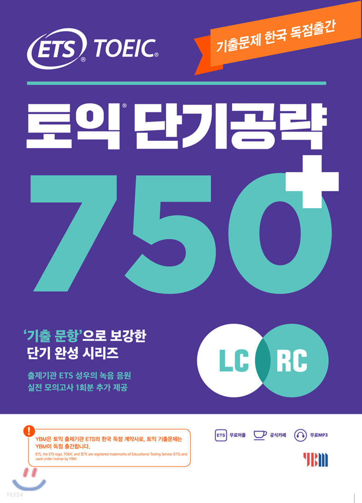

토익 단기공략 750+ '기출문항'으로 보강한 단기완성 시리즈 출제기관 ETS 성우의 녹음 음원 실전모의고사 1회분 추가제공
첫 응시에 900점 이상이 나왔다면 당신의 영어 실력은 아무 문제가 없다. 다만, 900을 겨우 넘는 수준과 만점에 가까운 수준은 실력의 간극은 분명히 존재한다. 만점을 받고 싶다면 약점을 보완해보자. 그러면서 여러 번 응시해 점수를 올리도록 하자. 여러 번 응시하면 시험 칠 때의 집중력과 요령을 키워 최적의 점수를 받을 수 있다.
수능 5등급이하로, 영어 기초가 없거나 아무것도 모를 경우 점수가 당연히 300~400점대에서 시작한다. 이 경우 시간이 없으면 독해와 병행하면서 토익 공부를 하게 된다. 물론 영어기초가 없을 뿐이지 기본 문법 기초 [9]를 가진 사람 한정. 문법 지식조차 없다면 토익 자체보다는 기초 단어와 문법부터 공부하자. 보통 700점 커트라인을 목표로 한다. [10] 다만 노베이스 상태에서는 처음부터 700점을 목표로 하는건 무리가 있으니 500~600점부터 목표로 잡는게 좋다.
물론 아무런 사전 학습 없이 처음 시험을 볼 경우 어색한 시험 유형과 시간 분배 실패로 실력보다 점수가 덜 나오는 것은 어느 정도 감안해야 한다.
